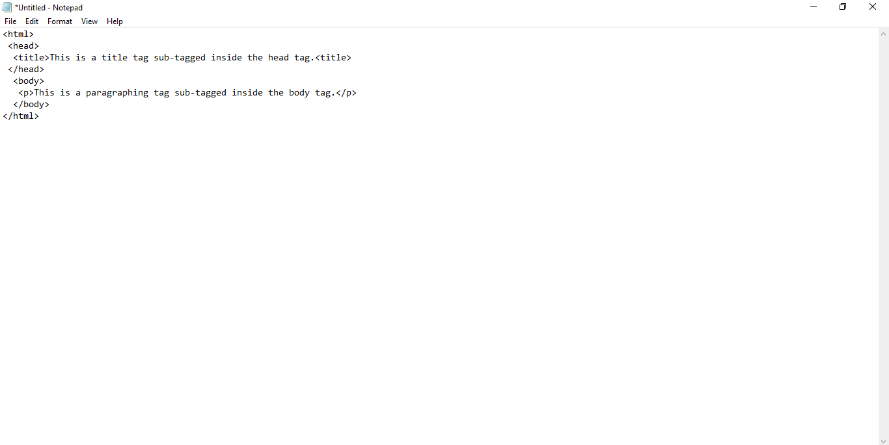

Sub tagging is the act of placing a HTML tag inside another HTML tag. For example in the HTML syntax earlier discussed, the head and body tag are both sub-tags in the HTML tag. If you don't get it no need to worry, view an example below.
You'll see more examples on sub-tagging in upcoming lessons.
<-- -->